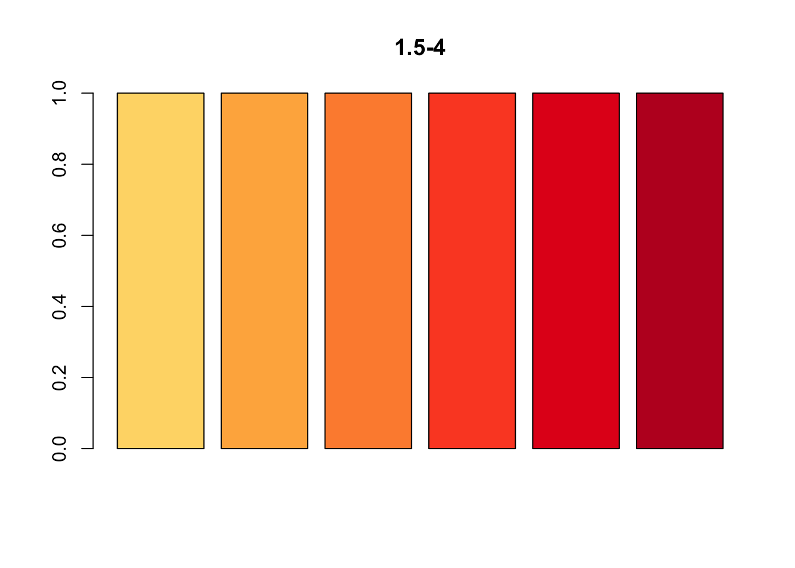

第 2 章 图形参数设置
2.1 颜色
2.1.1 固有颜色
colors()## 示例1.1-1
par(family='STKaiti')
plot(1:10,type='b',col='black',main='图1.1-1') ## 设置线的颜色
text(6,5,labels='文字',col='red') ## 设置文字颜色
points(2,5,col='blue') ## 设置点的颜色## 示例1.1-2
par(family='STKaiti')
plot(1:10,type='b',col=25,main='图1.1-2') ## 设置线的颜色
text(6,5,labels='文字',col=554)
points(2,5,col=28)
## pdf查看固有颜色色板
pdf("R固有颜色板.pdf",height=120)
par(mar=c(0,10,3,0)+0.1,yaxs='i')
barplot(rep(1,length(colors())),col=rev(colors()),
names.arg=rev(colors()),horiz=T,las=1,xaxt='n', # 名称+横向+间隔+不输出横轴
main=expression('Bars of colors in'~italic(colors())))
dev.off()
## quartz_off_screen
## 22.1.2 自助调色
## rgb函数
Hex <- rgb(red=126,green=255,blue=211,max=255)
Hex
## [1] "#7EFFD3"## 示例1.2-1
par(family='STKaiti')
plot(1:10,type='b',col=25,main='图1.2-1') ## 设置线的颜色
text(6,5,labels='文字',col=Hex)2.1.3 主题调色板
## rainbow(n,s=1,v=1,start=0,end=max(1,n-1)/n,gamma=1)
## n 设定产生颜色的数目
## start,end 设定彩虹颜色的一个子集，生成的颜色将从这个子集中选取## 示例1.3-1
par(family='STKaiti')
barplot(rep(1,41),main='图1.3-1',
col=c(rainbow(n=6,star=0, end=1/6),"white",
rainbow(n=6,star=1/6,end=2/6),"white",
rainbow(n=6,star=2/6,end=3/6),"white",
rainbow(n=6,star=3/6,end=4/6),"white",
rainbow(n=6,star=4/6,end=5/6),"white",
rainbow(n=6,star=5/6,end=1))
)
x.text<-c('赤','黄','绿','青','蓝','紫')
axis(side=1,at=seq(from=3,length.out=6,by=8.5),label=x.text,cex=0.75)## 示例1.3-2
barplot(rep(1,56),
col=c(rainbow(n=8,star=0,end=1/7),
rainbow(n=8,star=1/7,end=2/7),
rainbow(n=8,star=2/7,end=3/7),
rainbow(n=8,star=3/7,end=4/7),
rainbow(n=8,star=4/7,end=5/7),
rainbow(n=8,star=5/7,end=6/7),
rainbow(n=8,star=6/7,end=1) )
)2.1.4 其他主题配色函数
## heat.colors() terrain.colors() topo.colors() cm.colors()## 示例1.4-1
barplot(rep(1,6),col=heat.colors(6),main='heat.colors')barplot(rep(1,6),col=terrain.colors(6),main='terrain.colors')barplot(rep(1,6),col=topo.colors(6),main='topo.colors')barplot(rep(1,6),col=cm.colors(6),main='cm.colors')
2.1.5 颜色扩展包
## RColorBrewer包 brewer.pal()
## 连续Sequential 两极Diverging 离散Qualitative## 示例1.5-1
## RColorBrewerl连续型渐变色
library(RColorBrewer)
display.brewer.all(type='seq') # 18组 9个渐变颜色
## 示例1.5-2 RColorBrewerl极端型渐变色
library(RColorBrewer)
display.brewer.all(type='div') # 9组 11个颜色
## 示例1.5-3 RColorBrewerl离散型渐变色
library(RColorBrewer)
display.brewer.all(type='qual') # 8组## 示例1.5-4
library(RColorBrewer)
## 使用YlOrRd组的第3～8种颜色
barplot(rep(1,6),col=brewer.pal(9,'YlOrRd')[3:8],main='1.5-4')
## 使用BrBG组的第3～8种颜色
barplot(rep(1,6),col=brewer.pal(11,'BrBG')[3:8],main='1.5-4')2.2 文字
## text(font,cex,col,...)2.2.1 字体
## 示例2.1-1
par(family='STKaiti')
plot(c(1:6),col='white',main='图2.1-1')
text(2,2,labels='font=1: 正常字体(默认)',font=1)
text(3,3,labels='font=2: 粗体字体',font=2)
text(4,4,labels='font=3: 斜体字体',font=3)
text(5,5,labels='font=4: 粗斜体字体',font=4)## 示例2.1-2
# par(family='HersheySerif')
par(family='STKaiti')
plot(c(1:6),col='white',main='图2.1-2')
text(2,2,labels='font=1',font=1)
text(3,3,labels='font=2',font=2)
text(4,4,labels='font=3',font=3)
text(5,5,labels='font=4',font=4)2.3 点
## points(pch,col,cex,...)- pch 数字取点的样式
par(family='STKaiti')
plot(1,col='white',xlim=c(0.5,6.5),ylim=c(1,7),main='图3.1 R点样式')
for(i in c(0:25)){
x <- (i%/%5)*1+1
y <- 6-(i%%5)
if(length(which(c(21:25)==i)>=1)){
points(x,y,pch=i,bg='blue',cex=2) #21-25可设置背景样式
}else{
points(x,y,pch=i,cex=2)
}
text(x+0.22,y+0.22,labels=i)
}- pch 字符取点的样式,如 * . O o + - 0-9 |
par(family='STKaiti')
plot(1,col='white',xlim=c(0.5,6.5),ylim=c(1,7),main='图3.2 字符取点的样式')
for(i in c(0:25)){
x <- (i%/%5)*1+1
y <- 6-(i%%5)
if(length(which(c(21:25)==i)>=1)){
points(x,y,pch=i,bg='blue',cex=2) #21-25可设置背景样式
}else{
points(x,y,pch=i,cex=2)
}
text(x+0.22,y+0.22,labels=i)
}
points(6,5,pch='*',cex=2,main='图3.2')
text(6+0.22,5+0.22,labels='*')2.4 线
## lines(lty,lwd,col,...)
## plot(type默认为点,l为线)- lty 线条样式
par(family='STKaiti')
data = matrix(rep(rep(1:7),10),nrow=7,ncol=10)
plot(data[1,],type='l',lty=0,ylim=c(0,8),xlim=c(-1,10),axes=F,main='图4 lty 线样式')
text(0,1,labels='lty=0')
for(i in c(2:7)){
lines(data[i,],lty=i-1)
text(0,i,labels=paste('lty=',i-1))
}## lwd 线条宽度 lty默认为1，实线
par(family='STKaiti')
data = matrix(rep(rep(1:7),10),nrow=7,ncol=10)
plot(data[1,],type='l',lwd=0.5,ylim=c(0,9),xlim=c(-1,10),axes=F,main='图4 lwd 线条宽度')
text(0,1,labels='lwd=0.5')
for(i in c(2:7)){
lines(data[i,],lwd=i*0.5)
text(0,i,labels=paste('lwd=',i*0.5))
}